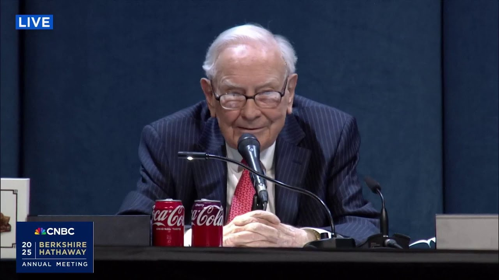

来B站一起耍【Global每日英语简报】
【沃伦·巴菲特透露伯克希尔近期差点花费100亿美元】
Summary: The paragraph discusses Berkshire Hathaway's high cash reserves, investment strategy, and leadership transition, with Buffett emphasizing an opportunistic approach and dismissing the need for constant market predictions.
摘要： 这段文字讨论了伯克希尔·哈撒韦公司的高现金储备、投资策略和领导层过渡，巴菲特强调了一种机会主义的方法，并否定了持续市场预测的必要性。

⏱️ Estimated Reading Time: 9 min
This next question comes from Advate Prasad in New York.
下一个问题来自纽约的Advate Prasad。
He writes, "Today, Berkshire holds over $300 billion in cash and short-term investments, representing about 27% of total assets, a historically high figure compared to the 13% average over the last 25 years.
他写道：“如今，伯克希尔持有超过3000亿美元的现金和短期投资，占总资产的约27%，这是历史高位，而过去25年的平均水平为13%。
This has also led Berkshire to effectively own nearly 5% of the entire US Treasury market.
这也使得伯克希尔实际持有近5%的整个美国国债市场。
Beyond the need for liquidity to meet insurance obligations, is the decision to raise cash primarily a d-risking strategy in response to high market valuations?
除了满足保险义务的流动性需求外，增加现金的决定是否主要是应对高市场估值的去风险策略？
Or is it also a deliberate effort to position Birkshar's balance sheet for a smooth smoother leadership transition, providing Greg Ael with maximum flexibility and a clean slate for future capital allocation decisions?
或者也是为了平稳的领导层过渡而有意调整伯克希尔的资产负债表，为Greg Ael提供最大灵活性和未来资本分配决策的干净起点？
And I will add one line from another shareholder, Mike Conway, who asks, "Are you encouraged you may see some fat pitches coming your way?"
我还要补充另一位股东Mike Conway的一句话，他问道：“你是否受到鼓舞，认为可能会有一些好机会出现？”
Yeah.
是的。
Well, I wouldn't do anything nearly so noble as to withhold investing myself just so that Greg could look good later on.
好吧，我不会为了Greg以后看起来不错而做出如此高尚的举动，比如自己停止投资。
[Applause]
[掌声]
Now if he if he gets any edge what I believe I'll resent it that so the uh now the the amount of cash we have is we we we would spend well we came pretty close to spending 10 billion not that long ago for example but we'd spend a hundred billion I mean and and those decisions are not tough to make uh uh when when something is offered that is that uh makes sense to us and that we understand and uh offers good value and where we don't worry about losing.
现在如果他得到任何优势，我相信我会对此不满，所以呃，现在我们持有的现金是我们会好好利用的，比如不久前我们差点花了100亿美元，但我们也可以花1000亿美元，我的意思是，当有对我们有意义、我们理解、提供良好价值且不用担心亏损的东西出现时，这些决定并不难做。
And the the one problem with the investment business is that things don't come along in an orderly fashion and they never will.
投资业务的一个问题是，机会不会有序出现，而且永远不会。
I mean, it isn't like every day.
我的意思是，并不是每天都有机会。
Uh, you know, the the long-term record is sensational, but that is not a product.
呃，你知道，长期记录很惊人，但那不是产品。
And I've been in, let's see, I've had um 200 trading days times 80 years.
我已经在这个行业，让我想想，我有200个交易日乘以80年。
And yeah, but at uh 16 million trading days, it been we kind of uh uh I mean 16,000 training days.
是的，但在呃1600万交易日中，我们大概有16000个交易日。
It it would be nice if every day you got four opportunities or something like that and you know you could and they were expected to be equally attractive.
如果每天都有四个机会之类的，而且你知道它们同样有吸引力，那会很好。
you know, if I if I was running a numbers racket, you know, every day would have the same expectancy of that I would keep 40% of whatever the handle was.
你知道，如果我经营一个数字赌博，每天都会有相同的期望，我会保留40%的赌注。
And so the only question would be is how much we transacted.
所以唯一的问题是我们交易了多少。
But we're not running that kind of a business.
但我们不是经营那种业务。
And so we're running a business which is very very very opportunistic.
所以我们经营的业务是非常非常机会主义的。
And uh Charlie always thought I did too many things.
呃，查理总是认为我做了太多事情。
Uh he thought if we did about five things in our lifetime, we we could we could uh we'd end up doing better than if we did 50 and and uh and that we never concentrated enough.
呃，他认为如果我们一生中做大约五件事，我们会比做50件事做得更好，而且我们从未足够专注。
Uh so that we would rather have if we've got 335 billion now in treasuries, we would rather have conditions that have developed where we would have like 50 billion or something like that.
呃，所以我们宁愿现在持有3350亿美元的国债，我们宁愿有发展到我们持有500亿美元左右的条件。
But that that just isn't the way the business works.
但那不是业务的运作方式。
And we have made a lot of money by not wanting to be fully invested at all times.
我们通过不想一直满仓赚了很多钱。
And uh um we don't think it's improper actually for people who are passive investors just to make a few simple investments and sit with their life uh sit for their life and them.
呃，实际上我们认为被动投资者只做几个简单的投资并持有终身并没有什么不妥。
But we've made the decision to be in the business.
但我们决定从事这个行业。
So uh we think we can do a little better than that by behaving in a very irregular manner.
所以呃，我们认为通过非常不规则的行为，我们可以做得更好一点。
But if you told me that I had to invest uh well our let's say that we have a roughly 40 billion a year coming in and we start with 335.
但如果你告诉我我必须投资，呃，假设我们每年大约有400亿美元流入，我们一开始有3350亿美元。
If you told me I had to invest 50 billion every year till we got down to 50 billion, that would be the dumbest thing in the world to invest in that manner.
如果你告诉我我必须每年投资500亿美元，直到我们降到500亿美元，那将是世界上最愚蠢的投资方式。
Things get extraordinarily attractive very occasionally.
机会偶尔会变得非常有吸引力。
The long-term trend is up.
长期趋势是上升的。
Nobody knows.
没人知道。
And uh I certainly don't know.
呃，我当然不知道。
Greg doesn't know.
Greg不知道。
Ajet doesn't know.
Ajet不知道。
Nobody knows what the market is going to do tomorrow, next week, next month.
没人知道市场明天、下周、下个月会怎样。
And nobody knows what business is going to do tomorrow, next week or next month.
也没人知道企业明天、下周或下个月会怎样。
But they spend all their time talking about it because it's it's easy to talk about and uh but it it it has no value.
但他们把所有时间都花在谈论它上，因为这很容易谈论，呃，但它没有价值。
Uh I've never found anybody I wanted to listen to on the subject.
呃，我从未找到过我想听的人谈论这个话题。
And uh the on the other hand, I found the leafing through things like that big Japanese book that I can't read anymore.
呃，另一方面，我发现翻阅那本我再也看不懂的日本大书。
Uh the uh it's it's a that's a treasure hunt.
呃，那是一场寻宝。
And every now and then you find something and occasionally, very occasionally, but it'll happen again that uh I don't know when it won't.
时不时你会发现一些东西，偶尔，非常偶尔，但它会再次发生，呃，我不知道什么时候不会。
It could be next week.
可能是下周。
It could be 5 years off, but it won't be 50 years off.
可能是5年后，但不会是50年后。
He will have we will be bombarded with offerings that that uh we'll be glad we have the cash for.
我们将被大量报价轰炸，呃，我们会很高兴我们有现金。
And it'd be a lot more fun if it would happen tomorrow, but it's very unlikely to happen tomorrow.
如果明天发生会更有趣，但明天发生的可能性很小。
Very very unlikely to happen tomorrow, but it's not unlikely to happen in 5 years.
明天发生的可能性非常非常小，但5年内发生的可能性不小。
And then it gets the probabilities get higher as you go along.
然后随着时间的推移，概率会越来越高。
It's kind of like death.
这有点像死亡。
I mean, if you're 10 years old, the chances that you're going to die the next day are low.
我的意思是，如果你10岁，第二天死亡的几率很低。
If you get to be 115 or something like that, it's almost a cinch.
如果你活到115岁左右，那几乎是肯定的。
Particularly if you're a male.
尤其是如果你是男性。
I mean, all the records are held by females in terms of age.
我的意思是，所有年龄记录都是由女性保持的。
And uh I I tried to get Charlie to have a sex change so he could test out whether and [Applause] uh he did pretty well for being a male.
呃，我曾试图让查理变性，这样他就可以测试一下，[掌声]呃，作为男性他做得相当不错。
I'll put it that way.
我就这么说吧。
Okay.
好的。